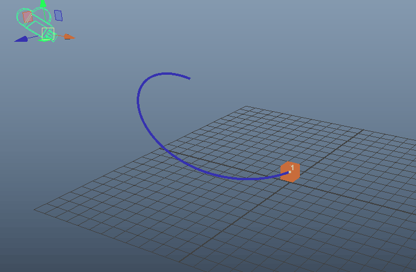

通过动画摄影机显示静态对象的运动轨迹图示。
在运动轨迹编辑器(Motion Trail Editor)中激活“锚点变换”(Anchor Transform)以隔离变换的移动，这样即使在漫游循环中或已完成的动画中，也能在局部上下文中看到变换的移动。需要相对于绑定其余部分的移动隔离单个变换的操作时，这是很有用的。
运动轨迹可以跟踪对象在 3D 空间中的运动，但您也可以激活“锚点变换”(Anchor Transform)，使运动轨迹显示对象在“摄影机空间”中的运动，也就是从摄影机视角查看对象的运动。这样，您就可以将摄影机锚定到某个关节，在更大的动画上下文中查看该关节的运动。
注： 无法编辑通过“锚点变换”(Anchor Transform)创建的曲线。
可视化摄影机移动
通过“锚点变换”(Anchor Transform)，可以使对象与动画摄影机同步，以显示对象相对于摄影机的移动。因此，在场景中设置摄影机动画时，即使对象未设置动画，也会显示对象在摄影机的“摄影机空间”中的移动。
播放场景时，运动轨迹会显示对象在摄影机视图中的移动情况。本页顶部的动画说明了如何通过动画摄影机显示静态对象的运动轨迹。以下动画显示了在摄影机移动且为对象设置动画时如何描述摄影机移动。

使用“锚点变换”(Anchor Transform)隔离动画
- 在场景中，创建已设置动画的摄影机。
- 选择场景中的对象（角色绑定的一部分或某个对象），并设置关键帧，即使对象未设置动画也是如此。对象上必须至少具有一个关键帧（即使它是静态的），“锚点变换”(Anchor Transform)轨迹才能工作。
- 在“动画”(Animation)菜单集 (F4) 中，选择“”(Visualize > Motion Trail Editor)，以打开“运动轨迹编辑器”(Motion Trail Editor)。
- 从“设置”(Settings)区域的“锚点”(Anchor)下拉菜单中选择摄影机。
- 选择场景中的对象，然后单击“创建运动轨迹”(Create Motion Trail)。
播放动画时，将从摄影机的视角显示对象的运动轨迹。